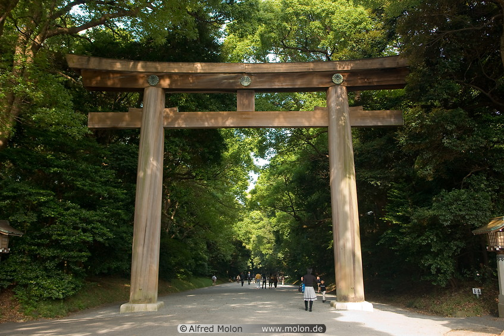
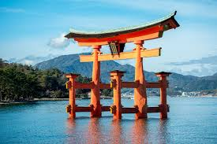
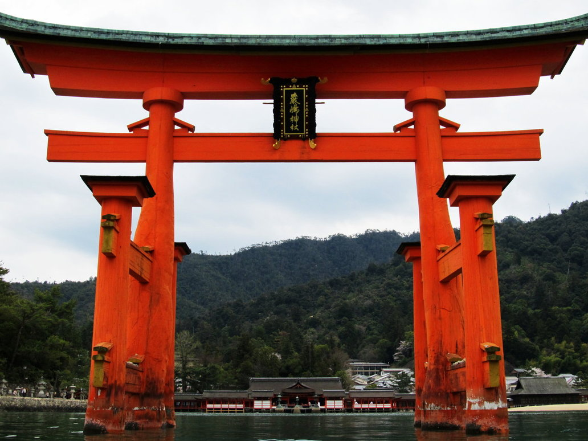
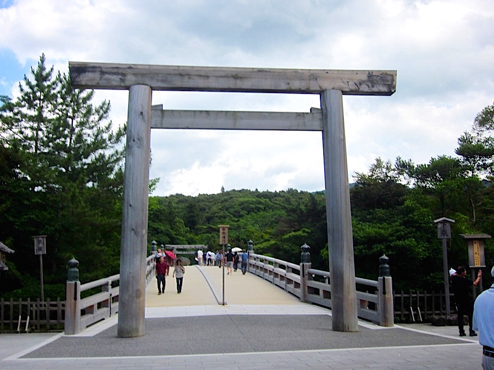

Torii, the iconically Japanese gateways that typically mark the entrance to Shinto shrines are ubiquitous all over the country, and are even used as a symbol on maps to mark the location of a shrine.
Buddhist temple locations will be marked with a swastika. Torii range in size from only a few inches high to monumental structures straddling roads such as the massive torii on the road to Heian Shrine in Kyoto, and while wood and stone were the earliest known construction materials, concrete, steel, bronze, ceramic, and even plastic is used sometimes.
As with many Japanese traditions the exact origin of torii is not known and there are mainly two competing theories, one saying that it is an indigenous invention, and the other that it is a variation on an imported idea.
Neighboring cultures with symbolic gates that may have influenced the design of torii are the Hongsal-mun of Korea, the Pailou of China, and the Torana of India, with the latter being a strong contender as some sources say that the legendary monk Kukai introduced a torana in the ninth century. As the first mention of torii in any texts is not until the tenth century, credibility is added to this particular theory.
Torii were probably not just associated with shrines, but rather many kinds of sacred space, however in the early years of the Meiji Restoration (1868-) the government banned the use of torii at any place other than officially registered shrines of the new State Shinto, which is why even today certain of the Sect Shintos still do not use a torii. Nowadays, however, torii can be seen in Buddhist temples at the entrance to the temple's own shrine or chinjusha.
Torii, lit. "bird perch" mark the transition from the profane to the sacred and may sometimes be hung with shimenawa or a sacred rope festooned with zig-zag-shaped folded pieces of white paper.
There are a wide variety of torii styles with numerous sub-styles, as well as individually unique torii. The most commonly seen style is known as Myojin Torii. These feature an upwardly curving top lintel, known as kasagi, and a common sub-style is Ryobu that feature a pair of small pillars supporting the main pillars.
“The rise of State Shinto”
Another major style is Shinmei, featuring uprights, hashira, and cross pieces that are straight. Torii of this style became very popular with the rise of State Shinto because of their link to Imperial sites.
One other type of small torii needs mentioning. Driving in the countryside you may see small vermillion torii by the side of the road. Sometimes they may actually be marking a small altar, but many times they are simply a warning not to dump trash. Likewise you may see a small torii on a wall down narrow alleys in places like Kyoto. These are a warning not to urinate there.
 < Back to first